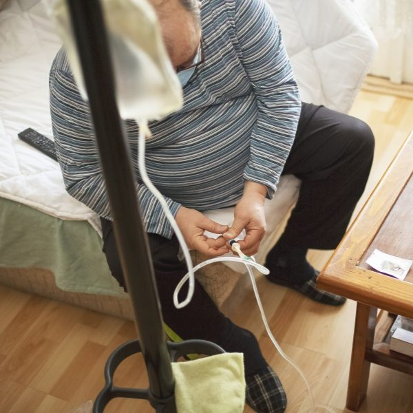
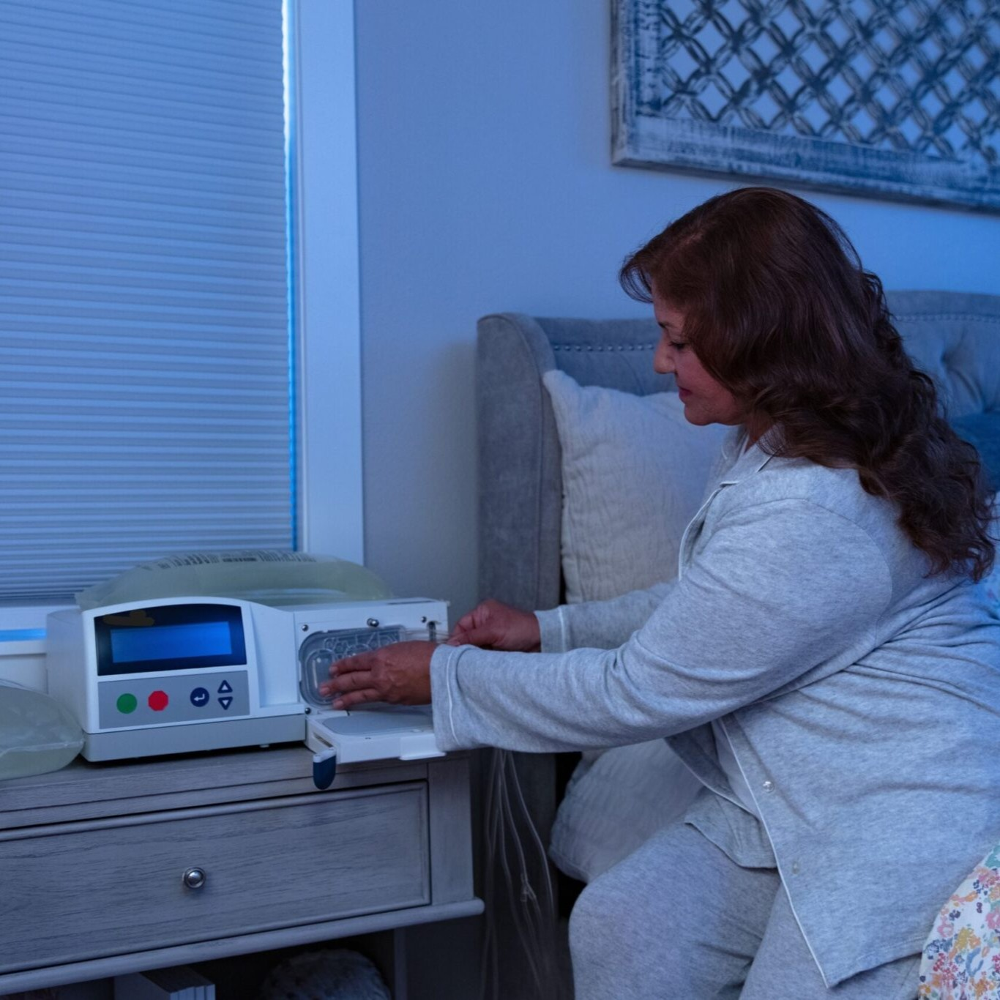

Esta información tiene un carácter meramente informativo. Para obtener asesoramiento o diagnóstico médicos, consulta a un profesional.
El peritoneo no es solo una bolsa; es una membrana serosa semipermeable sumamente rica en capilares sanguíneos. En el tratamiento de diálisis, esta membrana actúa como un filtro biológico de alta eficiencia.
Su estructura permite que moléculas pequeñas (como la urea, la creatinina y el potasio) pasen de la sangre al líquido de diálisis, mientras que las moléculas grandes (como las proteínas) se mantienen en el torrente sanguíneo.
Es un tejido vivo que requiere cuidados extremos, ya que su capacidad de filtrado puede disminuir con el tiempo si hay episodios repetidos de inflamación o infección.
Para que el tratamiento limpie la sangre, ocurren dos procesos físicos fundamentales dentro del abdomen:
La diálisis peritoneal continua ambulatoria (DPCA) es la modalidad manual del tratamiento y se define por su naturaleza constante y su independencia tecnológica. Su funcionamiento se basa en la técnica de estancia larga, donde el líquido de diálisis permanece en la cavidad peritoneal de forma ininterrumpida las 24 horas del día, los 7 días de la semana. El proceso operativo consiste en realizar manualmente entre tres y cinco intercambios diarios. En cada intercambio, el paciente utiliza la gravedad para drenar el líquido saturado de toxinas y luego infundir una solución nueva. Una vez terminada la infusión, el paciente se desconecta de las bolsas y queda libre para realizar sus actividades cotidianas mientras el proceso de difusión y ósmosis ocurre internamente; de ahí el término ambulatoria.

Fisiológicamente, la DPCA ofrece un aclaramiento de toxinas muy estable, ya que no hay periodos en los que el peritoneo esté vacío, lo que imita de forma más cercana la función renal continua. Desde una perspectiva logística, sus características principales son la portabilidad y la simplicidad, ya que no requiere electricidad ni maquinaria compleja, solo un espacio limpio y un soporte para colgar las bolsas. Es la opción predilecta para personas que buscan un tratamiento que no dependa de suministros eléctricos o para aquellos que desean mantener una movilidad total sin estar vinculados a un equipo médico fijo durante la noche.
La diálisis peritoneal automatizada (DPA) representa la evolución tecnológica del tratamiento, integrando un dispositivo electromédico conocido como cicladora para gestionar los intercambios. A diferencia de la modalidad manual, la DPA concentra la mayor parte del proceso de filtrado durante la noche, habitualmente en una sesión única de 8 a 10 horas mientras el paciente duerme. La cicladora está programada para medir con precisión exacta el volumen de líquido que entra y sale, controlando también la temperatura de la solución de forma automática. Al finalizar la terapia nocturna, la máquina puede dejar una cantidad de líquido en el abdomen para que actúe durante el día (día con permanencia) o dejar la cavidad vacía, dependiendo de la prescripción médica.
La función principal de la DPA es optimizar la calidad de vida y la reinserción social o laboral del paciente, ya que al liberar el horario diurno de la necesidad de realizar intercambios manuales, permite una rutina mucho más flexible. Técnicamente, la DPA es altamente eficiente para pacientes que tienen una permeabilidad peritoneal alta (transportadores rápidos), ya que los intercambios frecuentes y cortos realizados por la máquina maximizan la eliminación de solutos y líquidos. Sin embargo, requiere una infraestructura mínima en el hogar, que incluye una conexión eléctrica estable, espacio para almacenar la cicladora y los cartuchos de solución, además de un entrenamiento específico para el manejo de las alarmas y la programación del equipo. Es, en esencia, una modalidad que prioriza la comodidad y la precisión técnica mediante la automatización.

Esta fase es el cimiento de la seguridad del tratamiento. No se trata simplemente de organizar objetos, sino de crear un quirófano temporal en el hogar. El objetivo principal aquí es el control ambiental: al preparar el material y el espacio de forma metódica, se minimiza cualquier distracción o error logístico. Un entorno controlado es la primera barrera de defensa contra patógenos externos, asegurando que el paciente tenga todo a su alcance antes de iniciar el procedimiento para no romper la cadena de esterilidad.
Este es el paso más importante. No es un lavado común; debe durar al menos 2 o 3 minutos, tallando entre los dedos, uñas y hasta los antebrazos con jabón antibacterial, secando posteriormente con toallas de papel desechables. Se explican los pasos con más claridad en el apartado de más información.
El intercambio es el núcleo de la diálisis; es el momento en que ocurre la terapia propiamente dicha. Esta fase se divide en la salida del líquido gastado y la entrada del líquido nuevo. Su función técnica es gestionar el gradiente de concentración: al retirar el dializante cargado de toxinas y sustituirlo por uno limpio, se restablece la capacidad del peritoneo para seguir filtrando la sangre. Es un proceso de precisión donde la técnica de "no contacto" garantiza que el sistema cerrado de nuestro cuerpo no se contamine al interactuar con las bolsas externas.
En esta fase del tratamiento es donde se anotan los datos. Te recomendamos que si quieres llevar un mejor registro de tus diálisis uses nuestra aplicación ‘iDial’, la cual ha sido aprobada por médicos del área de la salud para llevar un orden en el tratamiento.
A continuación, te dejamos un video instructivo sobre los pasos para una correcta diálisis peritoneal, hecho por alumnos de la Universidad Estatal de Sonora plantel Navojoa para que no queden dudas acerca del proceso.